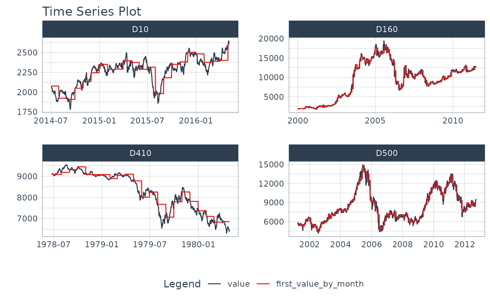

mutate_by_time() is a time-based variant of the popular dplyr::mutate() function
that uses .date_var to specify a date or date-time column and .by to group the
calculation by groups like "5 seconds", "week", or "3 months".
Usage
mutate_by_time(
.data,
.date_var,
.by = "day",
...,
.type = c("floor", "ceiling", "round")
)Arguments
- .data
A
tblobject ordata.frame- .date_var
A column containing date or date-time values to summarize. If missing, attempts to auto-detect date column.
- .by
A time unit to summarise by. Time units are collapsed using
lubridate::floor_date()orlubridate::ceiling_date().The value can be:
secondminutehourdayweekmonthbimonthquarterseasonhalfyearyear
Arbitrary unique English abbreviations as in the
lubridate::period()constructor are allowed.- ...
Name-value pairs. The name gives the name of the column in the output.
The value can be:
A vector of length 1, which will be recycled to the correct length.
A vector the same length as the current group (or the whole data frame if ungrouped).
NULL, to remove the column.A data frame or tibble, to create multiple columns in the output.
- .type
One of "floor", "ceiling", or "round. Defaults to "floor". See
lubridate::round_date.
See also
Time-Based dplyr functions:
summarise_by_time()- Easily summarise using a date column.mutate_by_time()- Simplifies applying mutations by time windows.pad_by_time()- Insert time series rows with regularly spaced timestampsfilter_by_time()- Quickly filter using date ranges.filter_period()- Apply filtering expressions inside periods (windows)slice_period()- Apply slice inside periods (windows)condense_period()- Convert to a different periodicitybetween_time()- Range detection for date or date-time sequences.slidify()- Turn any function into a sliding (rolling) function
Examples
# Libraries
library(dplyr)
# First value in each month
m4_daily_first_by_month_tbl <- m4_daily %>%
group_by(id) %>%
mutate_by_time(
.date_var = date,
.by = "month", # Setup for monthly aggregation
# mutate recycles a single value
first_value_by_month = first(value)
)
m4_daily_first_by_month_tbl
#> # A tibble: 9,743 × 4
#> # Groups: id [4]
#> id date value first_value_by_month
#> <fct> <date> <dbl> <dbl>
#> 1 D10 2014-07-03 2076. 2076.
#> 2 D10 2014-07-04 2073. 2076.
#> 3 D10 2014-07-05 2049. 2076.
#> 4 D10 2014-07-06 2049. 2076.
#> 5 D10 2014-07-07 2006. 2076.
#> 6 D10 2014-07-08 2018. 2076.
#> 7 D10 2014-07-09 2019. 2076.
#> 8 D10 2014-07-10 2007. 2076.
#> 9 D10 2014-07-11 2010 2076.
#> 10 D10 2014-07-12 2002. 2076.
#> # ℹ 9,733 more rows
# Visualize Time Series vs 1st Value Each Month
m4_daily_first_by_month_tbl %>%
tidyr::pivot_longer(value:first_value_by_month) %>%
plot_time_series(date, value, name,
.facet_scale = "free", .facet_ncol = 2,
.smooth = FALSE, .interactive = FALSE)
